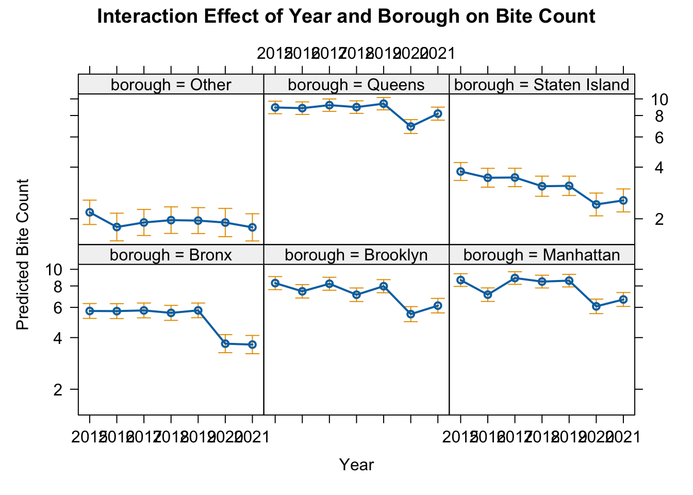
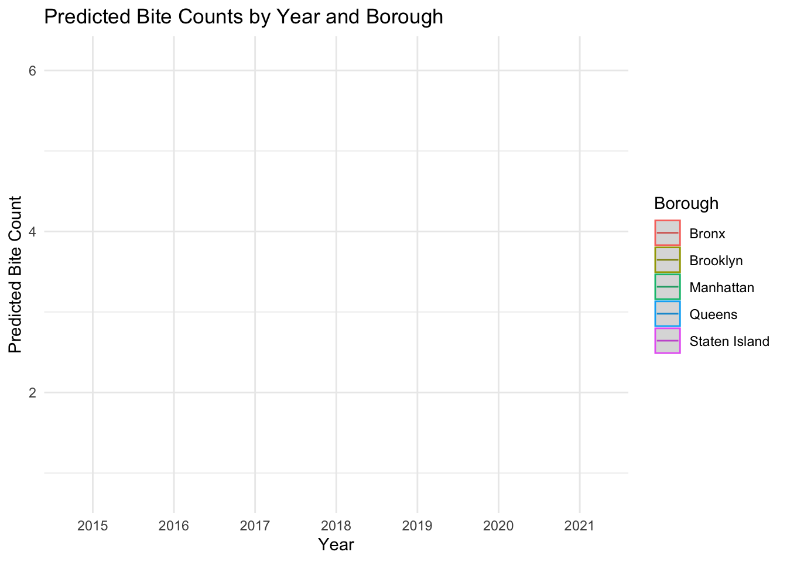
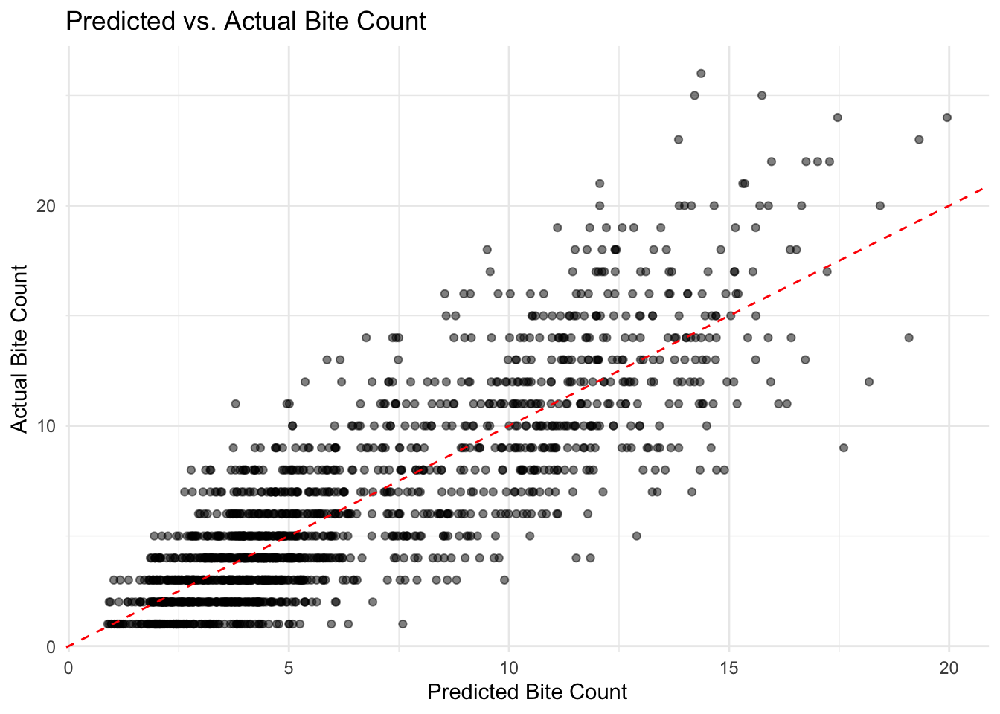
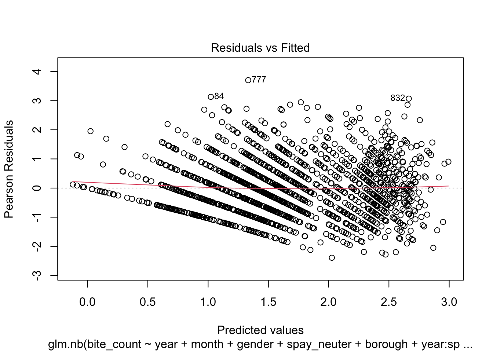
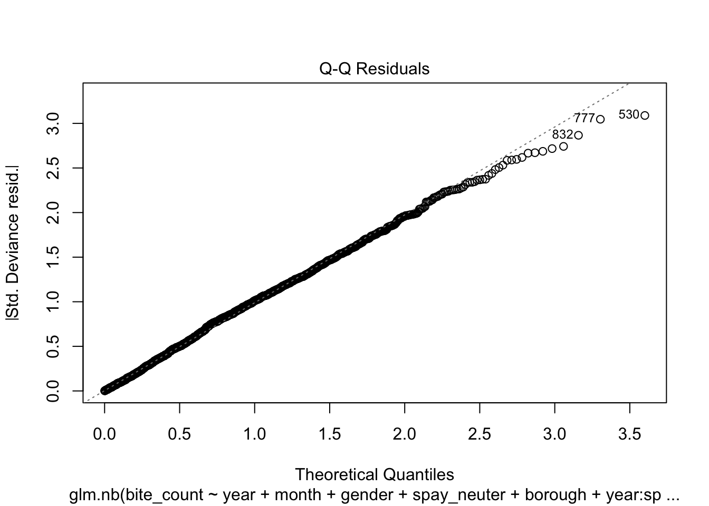
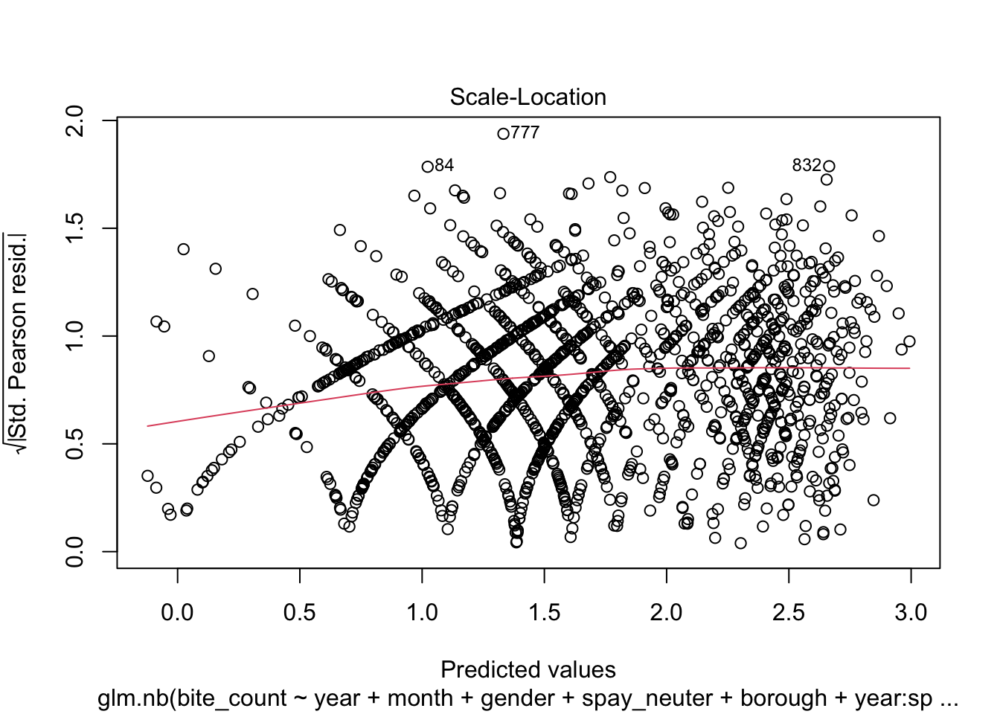
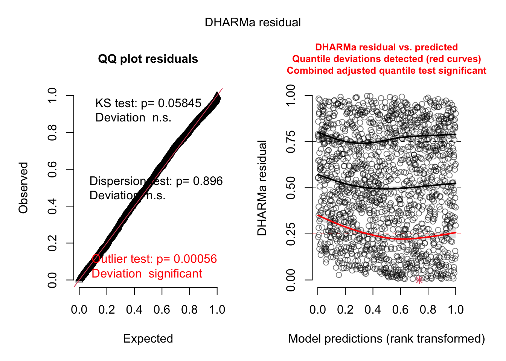

Cumulative impact of various factors on dog bite incidents
Variable features
The dependent variable hypothesized in the article is the number of dog bite incidents per zipcode. The predictor variables include the year and month of the incident, characteristics of the dog, and the area where the incident occurred. The year is measured as an interval-level variable, with values from 1 (corresponding to 2015) to 7 (corresponding to 2021). The area of the incident is divided into variables ranging from 1 to 5, representing the five boroughs of New York City. The gender of the dog is a binary variable, with 1 indicating female and 2 indicating male. Similarly, the sterilization status of the dog is also a binary variable, with 0 indicating unsterilized and 1 indicating sterilized.
data <- data.frame(
`Variable` = c("dog_bite_incidents", "year", "month", "gender", "spay_neuter", "borough"),
`Range` = c(
"$\\mathbb{N}$",
"$\\{1, 2, 3, 4, 5, 6, 7\\}$",
"$\\{1, 2, 3, 4, 5, 6, 7, 8, 9, 10, 11, 12\\}$",
"$\\{1, 2\\}$",
"$\\{0, 1\\}$",
"$\\{1, 2, 3, 4, 5\\}$"
)
)
knitr::kable(data, format = "pipe", align = "l", caption = "Variable Implications")| Variable | Range |
|---|---|
| dog_bite_incidents | \(\mathbb{N}\) |
| year | \(\{1, 2, 3, 4, 5, 6, 7\}\) |
| month | \(\{1, 2, 3, 4, 5, 6, 7, 8, 9, 10, 11, 12\}\) |
| gender | \(\{1, 2\}\) |
| spay_neuter | \(\{0, 1\}\) |
| borough | \(\{1, 2, 3, 4, 5\}\) |
Negative Binomial Regression Analysis
To measure the combined effects of year, dog background characteristics (i.e., gender and whether neutered) and the Borough they belong to on the incidence of dog bites, we first conduct a negative binomial regression analysis using records of dog bite incidents in New York.
The negative binomial regression model is a type of count model designed for dependent variables that can only take non-negative integer values. From the Spatial Correlations section, the study area meets the three prerequisites for negative binomial regression: the dog bite incidents are not independent, exhibiting spatial clustering; the dependent variable shows overdispersion; and the frequency of dog bite incidents is sufficiently low. Let the dependent variable follows a negative binomial distribution. The model equation is as follows:
\[\ln ({\hat y_i}) = {\beta _0} + {\beta _1}{X_{i1}} + {\beta _2}{X_{i2}} + \cdots {\beta _m}{X_{im}} + \xi\]
Here, \({y_i}\) represents the frequency of dog bite incidents within a year, \({\beta _m}\) is the coefficient, \(X_m\) are the explanatory variables, and \(\xi\) represents the heterogeneity across observations.
In negative binomial regression, where the conditional expectation \(E(Y|X) = {e^{{\beta _0} + {\beta _1}{X_{i1}} + {\beta _2}{X_{i2}} + \cdots {\beta _m}{X_{im}}}}\), the interpretation of the model’s coefficients is as follows: when the explanatory variable \({X_k}\) increases by one unit, the average occurrence rate of dog bite incidents becomes \({e^{{\beta _k}}}\) times what it was originally.
\[\frac{{E(Y|{X^*})}}{{E(Y|X)}} = \frac{{{e^{{\beta _0} + {\beta _1}{X_{i1}} + \cdots + {\beta _k}({X_{ik}} + 1) + \cdots + {\beta _m}{X_{im}}}}}}{{{e^{{\beta _0} + {\beta _1}{X_{i1}} + \cdots + {\beta _k}{X_{ik}} + \cdots + {\beta _m}{X_{im}}}}}} = {e^{{\beta _k}}}\]
首先，使用lasso筛主变量.
Regularized Model (Lasso)
# lasso
library(glmnet)
# 将数据转换为矩阵
x = model.matrix(bite_count ~ year + month + gender + spay_neuter + borough, data = bites_by_group)
y = bites_by_group |> pull(bite_count)
# Lasso 回归
cv_model = cv.glmnet(x, y, family = "poisson", alpha = 1) # Lasso：alpha = 1
cv_results <- with(cv_model,
data.frame(
log_lambda = log(lambda),
mean_mse = cvm,
lower_mse = cvlo,
upper_mse = cvup
))# 确定最佳lambda，
best_lambda <- cv_model$lambda.min
log_best_lambda <- log(best_lambda)best_lambda：从交叉验证 (cv.glmnet) 。 中找到的使模型误差最小的正则化参数 lambda。0.005529689 log_best_lambda：对最佳 lambda 取对数，用于后续绘图。 目的：lambda 是正则化参数，控制变量选择和模型的稀疏性。找到合适的 lambda 值可以平衡模型复杂度和预测性能。
ggplot(cv_results, aes(x = log_lambda, y = mean_mse)) +
geom_line(color = "blue", size = 1) +
geom_ribbon(aes(ymin = lower_mse, ymax = upper_mse), alpha = 0.2, fill = "blue") +
geom_vline(xintercept = log_best_lambda, linetype = "dashed", color = "red") +
labs(
title = "Cross-Validation for Lasso Regression",
x = "Log(Lambda)",
y = "Mean Cross-Validated Error"
) +
theme_minimal() +
theme(plot.title = element_text(hjust = 0.5))## Warning: Using `size` aesthetic for lines was deprecated in ggplot2 3.4.0.
## ℹ Please use `linewidth` instead.
## This warning is displayed once every 8 hours.
## Call `lifecycle::last_lifecycle_warnings()` to see where this warning was
## generated.
# 获取模型在最佳 lambda 下的系数
lasso_coefficients <- coef(cv_model, s = "lambda.min")
# 将系数转换为数据框以便查看
lasso_coefficients_df <- as.data.frame(as.matrix(lasso_coefficients)) %>%
rownames_to_column("Variable") %>%
rename(Coefficient = 1) %>%
filter(Coefficient != 0) # 筛选非零系数的变量
kable(
lasso_coefficients_df,
caption = "Cross-Validation Results for Lasso Regression",
align = "c",
digits = 4
) |>
kable_styling(
bootstrap_options = c("striped", "hover", "condensed", "responsive"),
full_width = TRUE
) |>
scroll_box(height = "300px")| Coefficient | s1 |
|---|---|
| X.Intercept. | 1.1045 |
| X.Intercept..1 | 0.0000 |
| year2016 | 0.0596 |
| year2017 | 0.1478 |
| year2018 | 0.0718 |
| year2019 | 0.0956 |
| year2020 | -0.2817 |
| year2021 | -0.2844 |
| month2 | -0.0156 |
| month3 | 0.0016 |
| month4 | 0.1053 |
| month5 | 0.1585 |
| month6 | 0.2270 |
| month7 | 0.1850 |
| month8 | 0.2069 |
| month9 | 0.1204 |
| month10 | 0.0697 |
| month11 | 0.0606 |
| month12 | 0.0000 |
| genderM | 0.8882 |
| spay_neuterNeutered | -0.1036 |
| boroughBrooklyn | 0.2997 |
| boroughManhattan | 0.2269 |
| boroughQueens | 0.4948 |
| boroughStaten.Island | -0.5572 |
Lasso 回归的主要目的是通过正则化减少模型中过多的变量，从而避免过拟合。Lasso 模型选择了以下变量：
- 时间因素：year 和 month
- 个体特征：gender 和 spay_neuter
- 地区特征：borough 这些变量都包含在最终的模型 glm.nb() 中，因此可以确认目前的模型包含了 Lasso 结果所建议的关键变量。
主效应model
通过 Lasso 回归对数据进行特征选择后，我们识别了几个关键变量，包括年份 (year)、月份 (month)、性别 (gender)、绝育状态 (spay_neuter) 和所在地区 (borough)。这些变量被纳入最终的负二项广义线性模型 (glm.nb) 中，以预测咬伤事件数量 (bite_count)。
建模
library(MASS)
model = glm.nb(bite_count ~ year + month + gender + spay_neuter + borough, data = bites_by_group)
model_summary <- tidy(model) %>%
mutate(
significance = case_when(
p.value < 0.001 ~ "***",
p.value < 0.01 ~ "**",
p.value < 0.05 ~ "*",
TRUE ~ ""
)
)
kable(
model_summary,
col.names = c("Term", "Estimate", "SE", "Statistic", "P-value", "Significance"),
caption = "Summary of Negative Binomial Regression Results"
) %>%
kable_styling(bootstrap_options = c("striped", "hover", "condensed"), full_width = TRUE) %>%
scroll_box(height = "400px")| Term | Estimate | SE | Statistic | P-value | Significance |
|---|---|---|---|---|---|
| (Intercept) | 1.0819840 | 0.0594554 | 18.1982535 | 0.0000000 | *** |
| year2016 | 0.0697408 | 0.0415739 | 1.6775135 | 0.0934421 | |
| year2017 | 0.1535577 | 0.0409067 | 3.7538482 | 0.0001741 | *** |
| year2018 | 0.0752355 | 0.0415347 | 1.8113915 | 0.0700803 | |
| year2019 | 0.0942075 | 0.0413851 | 2.2763627 | 0.0228243 |
|
| year2020 | -0.2791303 | 0.0454262 | -6.1446913 | 0.0000000 | *** |
| year2021 | -0.2870956 | 0.0458795 | -6.2576004 | 0.0000000 | *** |
| month2 | 0.0025297 | 0.0587213 | 0.0430799 | 0.9656378 | |
| month3 | 0.0299763 | 0.0582325 | 0.5147697 | 0.6067140 | |
| month4 | 0.1274838 | 0.0571182 | 2.2319298 | 0.0256196 |
|
| month5 | 0.1807138 | 0.0565828 | 3.1937937 | 0.0014042 | ** |
| month6 | 0.2447988 | 0.0559689 | 4.3738342 | 0.0000122 | *** |
| month7 | 0.2019422 | 0.0565467 | 3.5712485 | 0.0003553 | *** |
| month8 | 0.2276408 | 0.0563495 | 4.0397994 | 0.0000535 | *** |
| month9 | 0.1429531 | 0.0571015 | 2.5034925 | 0.0122974 |
|
| month10 | 0.0912030 | 0.0577714 | 1.5786867 | 0.1144079 | |
| month11 | 0.0888914 | 0.0577247 | 1.5399200 | 0.1235799 | |
| month12 | 0.0185023 | 0.0588556 | 0.3143674 | 0.7532420 | |
| genderM | 0.8851206 | 0.0245208 | 36.0966638 | 0.0000000 | *** |
| spay_neuterNeutered | -0.1122779 | 0.0228317 | -4.9176281 | 0.0000009 | *** |
| boroughBrooklyn | 0.3051114 | 0.0361136 | 8.4486684 | 0.0000000 | *** |
| boroughManhattan | 0.2376617 | 0.0365134 | 6.5088955 | 0.0000000 | *** |
| boroughQueens | 0.4981809 | 0.0349699 | 14.2459962 | 0.0000000 | *** |
| boroughStaten Island | -0.5517553 | 0.0446767 | -12.3499477 | 0.0000000 | *** |
从结果来看，。。。
模型还需要进一步evaluate。
evaluation
Multicollinearity Check
library(car)
vif_results <- vif(model) %>%
as.data.frame() %>%
rownames_to_column("Predictor") %>%
rename(
GVIF = GVIF,
DF = Df,
`GVIF^(1/(2*DF))` = `GVIF^(1/(2*Df))`
)
kable(
vif_results,
col.names = c("Predictor", "GVIF", "DF", "Scaled GVIF"),
caption = "Multicollinearity Check (GVIF)"
) |>
kable_styling(bootstrap_options = c("striped", "hover", "condensed"), full_width = FALSE)| Predictor | GVIF | DF | Scaled GVIF |
|---|---|---|---|
| year | 1.004775 | 6 | 1.000397 |
| month | 1.002312 | 11 | 1.000105 |
| gender | 1.003175 | 1 | 1.001586 |
| spay_neuter | 1.001316 | 1 | 1.000658 |
| borough | 1.005447 | 4 | 1.000679 |
GVIF: Measures the multicollinearity in the regression model. A GVIF value greater than 10 generally indicates a high multicollinearity issue. All GVIF values are close to 1, suggesting no significant multicollinearity.
GVIF^(1/(2*Df)):
A scaled version of GVIF for categorical variables. This value adjusts GVIF based on the degrees of freedom to make it comparable across variables. In your results, all values are very close to 1, further confirming no multicollinearity.
model does not exhibit multicollinearity among the
predictors, as all GVIF values and their scaled counterparts are well
below the threshold of concern (commonly 10 or higher).
This indicates that all predictors can be reliably used in regression model without the risk of biased coefficients caused by multicollinearity.
Residual Analysis
library(DHARMa)
residuals_sim = simulateResiduals(model)
plot(residuals_sim)
- QQ：
model在残差分析
With Interaction
To further increase the precision of the model fit, interaction terms between variables were added. After using stepwise reduction to simplify the model complexity, the final negative binomial regression model is as follows: ### 建模
data <- data.frame(
`Main Effect` = c("year", "month", "gender", "spay_neuter", "borough", " "),
`Double Interaction Effect` = c(
"year * spay_neuter",
"year * borough",
"month * spay_neuter",
"gender * spay_neuter",
"gender * borough",
"spay_neuter * borough"
)
)
knitr::kable(data, format = "pipe", align = "l", caption = "Final Negative Binomial Regression Model", escape = FALSE)| Main.Effect | Double.Interaction.Effect |
|---|---|
| year | year * spay_neuter |
| month | year * borough |
| gender | month * spay_neuter |
| spay_neuter | gender * spay_neuter |
| borough | gender * borough |
| spay_neuter * borough |
filter_model = glm.nb(bite_count ~ year + month + gender + spay_neuter +
borough + year:spay_neuter + year:borough + month:spay_neuter +
gender:spay_neuter + gender:borough + spay_neuter:borough,
data = bites_by_group)## Warning in theta.ml(Y, mu, sum(w), w, limit = control$maxit, trace =
## control$trace > : iteration limit reached
## Warning in theta.ml(Y, mu, sum(w), w, limit = control$maxit, trace =
## control$trace > : iteration limit reachedsummary(filter_model)##
## Call:
## glm.nb(formula = bite_count ~ year + month + gender + spay_neuter +
## borough + year:spay_neuter + year:borough + month:spay_neuter +
## gender:spay_neuter + gender:borough + spay_neuter:borough,
## data = bites_by_group, init.theta = 35483.63491, link = log)
##
## Coefficients:
## Estimate Std. Error z value Pr(>|z|)
## (Intercept) 1.341982 0.091715 14.632 < 2e-16
## year2016 0.264946 0.090104 2.940 0.003277
## year2017 0.129712 0.092290 1.405 0.159878
## year2018 0.271432 0.090817 2.989 0.002801
## year2019 0.271740 0.090544 3.001 0.002689
## year2020 -0.194931 0.104705 -1.862 0.062642
## year2021 -0.215686 0.107294 -2.010 0.044406
## month2 -0.027454 0.069567 -0.395 0.693106
## month3 0.010489 0.068496 0.153 0.878294
## month4 -0.006620 0.068491 -0.097 0.922998
## month5 0.065807 0.067283 0.978 0.328038
## month6 0.156214 0.065759 2.376 0.017522
## month7 0.190514 0.065407 2.913 0.003582
## month8 0.140605 0.066486 2.115 0.034448
## month9 0.032965 0.068063 0.484 0.628152
## month10 0.091623 0.067365 1.360 0.173794
## month11 0.017673 0.068307 0.259 0.795847
## month12 -0.012775 0.068906 -0.185 0.852919
## genderM 0.858813 0.054618 15.724 < 2e-16
## spay_neuterNeutered -0.926300 0.109048 -8.494 < 2e-16
## boroughBrooklyn 0.138429 0.100729 1.374 0.169360
## boroughManhattan -0.330011 0.108318 -3.047 0.002314
## boroughQueens 0.005221 0.100485 0.052 0.958560
## boroughStaten Island -0.735464 0.129502 -5.679 1.35e-08
## year2016:spay_neuterNeutered 0.059432 0.073885 0.804 0.421172
## year2017:spay_neuterNeutered 0.118824 0.072212 1.645 0.099869
## year2018:spay_neuterNeutered -0.178941 0.073824 -2.424 0.015355
## year2019:spay_neuterNeutered -0.105464 0.073298 -1.439 0.150195
## year2020:spay_neuterNeutered -0.343394 0.083263 -4.124 3.72e-05
## year2021:spay_neuterNeutered -0.351875 0.084249 -4.177 2.96e-05
## year2016:boroughBrooklyn -0.401051 0.113611 -3.530 0.000416
## year2017:boroughBrooklyn -0.221060 0.114629 -1.928 0.053795
## year2018:boroughBrooklyn -0.485118 0.116810 -4.153 3.28e-05
## year2019:boroughBrooklyn -0.441569 0.115885 -3.810 0.000139
## year2020:boroughBrooklyn -0.084009 0.130890 -0.642 0.520983
## year2021:boroughBrooklyn -0.086726 0.134072 -0.647 0.517722
## year2016:boroughManhattan -0.265007 0.121969 -2.173 0.029800
## year2017:boroughManhattan 0.005676 0.121403 0.047 0.962707
## year2018:boroughManhattan 0.073638 0.120001 0.614 0.539453
## year2019:boroughManhattan 0.036786 0.119708 0.307 0.758616
## year2020:boroughManhattan 0.276769 0.136570 2.027 0.042706
## year2021:boroughManhattan 0.216915 0.139749 1.552 0.120621
## year2016:boroughQueens -0.205677 0.113647 -1.810 0.070329
## year2017:boroughQueens 0.083213 0.113586 0.733 0.463805
## year2018:boroughQueens 0.043839 0.113139 0.387 0.698403
## year2019:boroughQueens 0.021763 0.112744 0.193 0.846939
## year2020:boroughQueens 0.118833 0.130621 0.910 0.362951
## year2021:boroughQueens 0.255885 0.131547 1.945 0.051750
## year2016:boroughStaten Island -0.145628 0.143157 -1.017 0.309031
## year2017:boroughStaten Island -0.013484 0.142522 -0.095 0.924627
## year2018:boroughStaten Island -0.183792 0.148307 -1.239 0.215246
## year2019:boroughStaten Island -0.241500 0.146806 -1.645 0.099964
## year2020:boroughStaten Island -0.115257 0.178990 -0.644 0.519622
## year2021:boroughStaten Island -0.327040 0.192923 -1.695 0.090040
## month2:spay_neuterNeutered 0.093060 0.104601 0.890 0.373646
## month3:spay_neuterNeutered 0.057360 0.103859 0.552 0.580754
## month4:spay_neuterNeutered 0.304865 0.101057 3.017 0.002555
## month5:spay_neuterNeutered 0.267348 0.099878 2.677 0.007434
## month6:spay_neuterNeutered 0.221396 0.098430 2.249 0.024495
## month7:spay_neuterNeutered 0.053891 0.099843 0.540 0.589366
## month8:spay_neuterNeutered 0.204595 0.099156 2.063 0.039077
## month9:spay_neuterNeutered 0.251572 0.100921 2.493 0.012676
## month10:spay_neuterNeutered 0.021214 0.102592 0.207 0.836178
## month11:spay_neuterNeutered 0.158559 0.102491 1.547 0.121848
## month12:spay_neuterNeutered 0.077373 0.104968 0.737 0.461056
## genderM:spay_neuterNeutered -0.127791 0.045308 -2.820 0.004795
## genderM:boroughBrooklyn 0.158718 0.071433 2.222 0.026289
## genderM:boroughManhattan 0.124864 0.072546 1.721 0.085221
## genderM:boroughQueens 0.156415 0.068417 2.286 0.022243
## genderM:boroughStaten Island -0.097614 0.091720 -1.064 0.287213
## spay_neuterNeutered:boroughBrooklyn 0.898637 0.069394 12.950 < 2e-16
## spay_neuterNeutered:boroughManhattan 1.144141 0.070459 16.238 < 2e-16
## spay_neuterNeutered:boroughQueens 0.975707 0.067006 14.561 < 2e-16
## spay_neuterNeutered:boroughStaten Island 1.009285 0.086896 11.615 < 2e-16
##
## (Intercept) ***
## year2016 **
## year2017
## year2018 **
## year2019 **
## year2020 .
## year2021 *
## month2
## month3
## month4
## month5
## month6 *
## month7 **
## month8 *
## month9
## month10
## month11
## month12
## genderM ***
## spay_neuterNeutered ***
## boroughBrooklyn
## boroughManhattan **
## boroughQueens
## boroughStaten Island ***
## year2016:spay_neuterNeutered
## year2017:spay_neuterNeutered .
## year2018:spay_neuterNeutered *
## year2019:spay_neuterNeutered
## year2020:spay_neuterNeutered ***
## year2021:spay_neuterNeutered ***
## year2016:boroughBrooklyn ***
## year2017:boroughBrooklyn .
## year2018:boroughBrooklyn ***
## year2019:boroughBrooklyn ***
## year2020:boroughBrooklyn
## year2021:boroughBrooklyn
## year2016:boroughManhattan *
## year2017:boroughManhattan
## year2018:boroughManhattan
## year2019:boroughManhattan
## year2020:boroughManhattan *
## year2021:boroughManhattan
## year2016:boroughQueens .
## year2017:boroughQueens
## year2018:boroughQueens
## year2019:boroughQueens
## year2020:boroughQueens
## year2021:boroughQueens .
## year2016:boroughStaten Island
## year2017:boroughStaten Island
## year2018:boroughStaten Island
## year2019:boroughStaten Island .
## year2020:boroughStaten Island
## year2021:boroughStaten Island .
## month2:spay_neuterNeutered
## month3:spay_neuterNeutered
## month4:spay_neuterNeutered **
## month5:spay_neuterNeutered **
## month6:spay_neuterNeutered *
## month7:spay_neuterNeutered
## month8:spay_neuterNeutered *
## month9:spay_neuterNeutered *
## month10:spay_neuterNeutered
## month11:spay_neuterNeutered
## month12:spay_neuterNeutered
## genderM:spay_neuterNeutered **
## genderM:boroughBrooklyn *
## genderM:boroughManhattan .
## genderM:boroughQueens *
## genderM:boroughStaten Island
## spay_neuterNeutered:boroughBrooklyn ***
## spay_neuterNeutered:boroughManhattan ***
## spay_neuterNeutered:boroughQueens ***
## spay_neuterNeutered:boroughStaten Island ***
## ---
## Signif. codes: 0 '***' 0.001 '**' 0.01 '*' 0.05 '.' 0.1 ' ' 1
##
## (Dispersion parameter for Negative Binomial(35483.63) family taken to be 1)
##
## Null deviance: 4944.9 on 1572 degrees of freedom
## Residual deviance: 1437.1 on 1499 degrees of freedom
## AIC: 7045.8
##
## Number of Fisher Scoring iterations: 1
##
##
## Theta: 35484
## Std. Err.: 232188
## Warning while fitting theta: iteration limit reached
##
## 2 x log-likelihood: -6895.762Model evaluation
Cross-validation of the final model is depicted in the following illustration, where the red dashed line represents the ideal prediction scenario (i.e., predicted values equal actual values). If points fall near this line, it indicates that the model predicts well. Points located above the diagonal line suggest that the model underestimates the actual values; conversely, if points are below the diagonal line, the model overestimates the actual values.
Overall, while the scatter plot shows a slight systematic deviation, the final negative binomial regression model still accurately predicts low and medium value areas. However, the error is larger in high-value areas, where actual values tend to fall below the predicted values. This may indicate a tendency of the model to overfit in regions with high incident counts.
Significance evaluation
filter_model_summary <- tidy(filter_model, exponentiate = TRUE, conf.int = TRUE)
print(filter_model_summary)## # A tibble: 74 × 7
## term estimate std.error statistic p.value conf.low conf.high
## <chr> <dbl> <dbl> <dbl> <dbl> <dbl> <dbl>
## 1 (Intercept) 3.83 0.0917 14.6 1.75e-48 3.19 4.57
## 2 year2016 1.30 0.0901 2.94 3.28e- 3 1.09 1.56
## 3 year2017 1.14 0.0923 1.41 1.60e- 1 0.950 1.36
## 4 year2018 1.31 0.0908 2.99 2.80e- 3 1.10 1.57
## 5 year2019 1.31 0.0905 3.00 2.69e- 3 1.10 1.57
## 6 year2020 0.823 0.105 -1.86 6.26e- 2 0.669 1.01
## 7 year2021 0.806 0.107 -2.01 4.44e- 2 0.652 0.993
## 8 month2 0.973 0.0696 -0.395 6.93e- 1 0.849 1.11
## 9 month3 1.01 0.0685 0.153 8.78e- 1 0.884 1.16
## 10 month4 0.993 0.0685 -0.0967 9.23e- 1 0.869 1.14
## # ℹ 64 more rowsInteraction effect visualization
library(effects)
interaction_effect_y_bo <- effect("year:borough", filter_model)
plot(interaction_effect_y_bo,
main = "Interaction Effect of Year and Borough on Bite Count",
xlab = "Year",
ylab = "Predicted Bite Count")
library(ggeffects)
# 提取交互效应预测
interaction_preds <- ggpredict(filter_model, terms = c("year", "borough"))
# 可视化交互效应
ggplot(interaction_preds, aes(x = x, y = predicted, color = group)) +
geom_line() +
geom_ribbon(aes(ymin = conf.low, ymax = conf.high), alpha = 0.2) +
labs(
title = "Predicted Bite Counts by Year and Borough",
x = "Year",
y = "Predicted Bite Count",
color = "Borough"
) +
theme_minimal()
Prediction
In the plot, the red dashed line represents the ideal prediction scenario where the predicted values equal the actual values. Points close to this line indicate that the model is performing well in its predictions. If points are positioned above the diagonal line, it suggests that the model has underestimated the actual values; conversely, if points are located below the diagonal line, it indicates that the model has overestimated the actual values. 。
# Predicted vs Actual Bite Count
inter_predict = bites_by_group |>
mutate(predicted = predict(model_stepwise, type = "response"))
ggplot(inter_predict, aes(x = predicted, y = bite_count)) +
geom_point(alpha = 0.5) +
geom_abline(slope = 1, intercept = 0, color = "red", linetype = "dashed") +
labs(title = "Predicted vs. Actual Bite Count",
x = "Predicted Bite Count",
y = "Actual Bite Count") +
theme_minimal()
Additionally, the quality of the fitted model can be assessed through residual analysis and diagnostics, as illustrated in the following four plots.
- Residual vs. Fitted Plot:
This graph helps to detect non-linearity, unequal error variances, and outliers. Ideally, the residuals should be randomly dispersed around the horizontal axis, meaning the red dashed line (a smooth curve) should be close to a horizontal straight line.
- Q-Q Plot:
This plot is used to check whether the residuals conform to the distribution assumed by the model.
- Scale-Location Plot:
This plot shows the spread of residuals versus fitted values and helps to check for homoscedasticity (constant spread of residuals). A model that meets this assumption will show a horizontal line with randomly spread points.
- Residuals vs. Leverage Plot:
This plot is critical for identifying observations with high leverage values—points that have a significant impact on the model’s fit. Ideally, no points should exceed the threshold set by Cook’s distance, indicated by the dashed lines.
残差分析
library(DHARMa)
residuals_sim = simulateResiduals(model_stepwise)
plot(model_stepwise)
From the analysis of the four diagnostic plots, the fitted model exhibits several shortcomings. Firstly, the tails of the residual distribution slightly deviate from the assumed negative binomial distribution. This deviation suggests that the residuals might not be perfectly modeled, indicating potential issues with the model fit or the distributional assumptions. Secondly, the distribution of points in the Scale-Location plot appears striated, and the red smooth line shows a non-horizontal trend. This pattern indicates that the variance of the residuals may change with fitted values, suggesting the presence of heteroscedasticity. This non-constant variance can affect the reliability of the model’s standard errors and confidence intervals.Lastly, the Residuals vs Leverage Plot reveals the presence of points with high leverage, which could be overly influencing the model’s predictions. These high leverage points warrant further investigation to determine whether they should be removed or adjusted to improve model accuracy and robustness.
两模型对比
Generalized Linear Mixed Model (GLMM)
为了解决上述模型拟合问题，本文进一步使用Generalized Linear Mixed Model (GLMM)对拟合模型进行优化。
The Generalized Linear Mixed Model (GLMM) is an extension of the Generalized Linear Model (GLM) and the Linear Mixed Model (LMM). GLMM consists of three main components: random effects, fixed effects, and a link function. Fixed effects represent the overall level parameters consistent across all observations, while random effects account for individual variability or group-level differences that may influence the response variable. The link function connects the linear predictor to the mean of the response variable distribution, allowing the dependent variable to deviate from a normal distribution and enabling modeling of various types of data, including binary, count, and continuous outcomes.
Let the response variable \(y\) belongs to the exponential family, its conditional distribution can be expressed as follows:
\[f(y|b) = \prod\limits_{i = 1}^n {f({y_i}|{\eta _i})}\]
Where \({\eta _i} = {x_i}^ \top \beta + {z_i}^ \top b\). Additionally, the random effect \(b\) is assumed to be distributed according to \(b \sim {\rm N}(0,\Sigma )\).
Therefore the GLMM is structured as follows:
\[g(\vec {\rm E}(y)) = {\rm X}\vec \beta + {\rm Z}\vec b + \varepsilon\]
In the model, \(g( \cdot )\) represents the link function, which connects the expected value of the response variable to the linear predictor. Here, the logarithm function \(g(\mu ) = \ln (\mu )\) is used, which is appropriate for the Poisson distribution. \(\vec{\mathrm{E}}(y)\) denotes the vector of expected values for the response variable, and \(\varepsilon\) represents the error term, capturing random noise or the unexplained variance. \({\rm X}\vec \beta + {\rm Z}\vec b\) represents the linear combination of fixed and random effects, \({\rm X}\vec \beta\) is used to explain global trends, and \({\rm Z}\vec b\) is utilized to capture differences among observations. In this context, \({\rm X}\) is the design matrix for fixed effects, which is of order \(n \times p\), where \(n\) is the number of observations and \(p\) is the number of fixed effect variables; \(\vec \beta\) is the vector of coefficients for fixed effects, with each element representing the regression coefficient of a fixed effect variable. Similarly, \({\rm Z}\) also serves as the design matrix for random effects, of order \(n \times q\), where \(q\) is the number of random effect variables. \(\vec b\) is the vector of coefficients for random effects, representing inter-group deviations used to explain random differences between groups. The model assumes \(b \sim {\rm N}(0,\Sigma )\), thereby the random effects are normally distributed with a mean of \(0\) and a covariance matrix \(\Sigma\).
For the dog bite incidents dataset, the response variable \(y\) represents the number of dog bite incidents per zipcode per month. Fixed effects in the model include year, month, gender, and sterilization status. Random effects are attributed to different boroughs (5 boroughs in total). Thus, for all response variables, \({\rm X}\) is a matrix containing year, month, gender, and sterilization status; \(\vec \beta\) represents the coefficients for the fixed effects; \({\rm X}\) indicates the matrix for the borough each response variable belongs to; and \(\vec b\) denotes the deviation for each borough (random effects). This setup allows the model to adjust for the influence of both environmental conditions and borough-specific variations in the occurrence of dog bites.
library(lme4)
glmm_model = glmer.nb(
bite_count ~ year + month + gender + spay_neuter + (1 | borough),
data = bites_by_group
)
summary(glmm_model)## Generalized linear mixed model fit by maximum likelihood (Laplace
## Approximation) [glmerMod]
## Family: Negative Binomial(24.7739) ( log )
## Formula: bite_count ~ year + month + gender + spay_neuter + (1 | borough)
## Data: bites_by_group
##
## AIC BIC logLik deviance df.resid
## 7428.7 7546.6 -3692.3 7384.7 1551
##
## Scaled residuals:
## Min 1Q Median 3Q Max
## -2.2530 -0.7004 -0.1379 0.5946 4.3986
##
## Random effects:
## Groups Name Variance Std.Dev.
## borough (Intercept) 0.1297 0.3601
## Number of obs: 1573, groups: borough, 5
##
## Fixed effects:
## Estimate Std. Error z value Pr(>|z|)
## (Intercept) 1.180466 0.169985 6.945 3.80e-12 ***
## year2016 0.069807 0.041693 1.674 0.094071 .
## year2017 0.153530 0.040995 3.745 0.000180 ***
## year2018 0.075276 0.041613 1.809 0.070459 .
## year2019 0.094146 0.041424 2.273 0.023043 *
## year2020 -0.278894 0.045542 -6.124 9.13e-10 ***
## year2021 -0.286869 0.045945 -6.244 4.27e-10 ***
## month2 0.002486 0.058859 0.042 0.966312
## month3 0.029950 0.058421 0.513 0.608193
## month4 0.127434 0.057260 2.226 0.026045 *
## month5 0.180648 0.056723 3.185 0.001449 **
## month6 0.244653 0.056072 4.363 1.28e-05 ***
## month7 0.201824 0.056634 3.564 0.000366 ***
## month8 0.227600 0.056477 4.030 5.58e-05 ***
## month9 0.142905 0.057233 2.497 0.012529 *
## month10 0.091131 0.057893 1.574 0.115462
## month11 0.088930 0.057918 1.535 0.124671
## month12 0.018499 0.059010 0.313 0.753909
## genderM 0.884882 0.024565 36.023 < 2e-16 ***
## spay_neuterNeutered -0.112301 0.022910 -4.902 9.50e-07 ***
## ---
## Signif. codes: 0 '***' 0.001 '**' 0.01 '*' 0.05 '.' 0.1 ' ' 1残差分析
library(DHARMa)
residuals_glmm_sim = simulateResiduals(glmm_model)
plot(residuals_glmm_sim) 有outlier，所以该模型并不。。。
Model对比：
三者相比，AIC。。。 并且，残差分析显示，只有with interaction的有意义。
Conclusion
三个模型对比，只含有主效应的model。。。。 含有inter。。。 后续生成的。。。但是能解释一些。。。